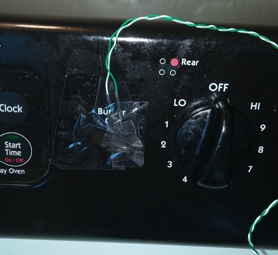
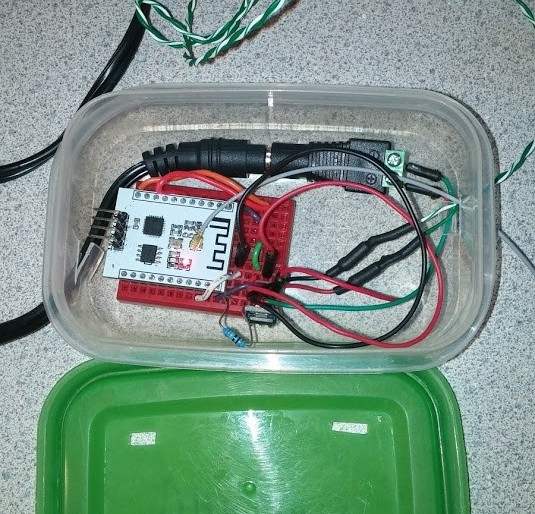

Did I turn off the stove...ESP8266
Posted on Sat 08 October 2016 in Electronics
My wife and I leave the house after a good meal and after like 20 minutes in the car, I ask my wife…did we turn off the stove? My wife answers…you were the last one to cook. What to do now? Go back home and check it. Now, that sucks.
To solve this common problem, I came up with a solution to use internet of things (IOT) to monitor stove status. So here is a final product, a URL I type in my browser and I can see the stove status.

How to do IOT cheaply? use ESP8266 module. If you don’t know what I am talking about, ESP8266 is a cheap (4 \$) wifi and microcontroller soc module. To learn more about ESP8266, sthe book by Kolbans. It can be programmed to connect to wifi network and act as tcp server or tcp client. In addition to connecting to network, it has numerous general purpose inputs-outputs (GPIO), one analog to digital converter (ADC) and couple of PWM’s. TCP server can be used to serve an html page which the status of GPIO pin or read ADC embedded in it. Coding for ESP8266 is done in C programming language, once compiled with toolchain, it can be flashed onto the flash memory. More details on how to compile and flash are described in detail in Kolbans book.
So coming back to the main point of the article, how did I read the status of my stove, I used the “burner on” led light on my stove which get turned on when any burner is “on”. I read the status of the “burner on” led light by placing a phototranistor close to it (as shown in the schematic below) and the end of phototransistor is fed to a GPIO. If the “burner on” is on then one of the GPIO reads high and if the “burner on” is off then GPIO reads low. One can also use a temperature sensor for this purpose, but “burner on” method works for my stove.
This is the schematic of the project:

Two USB-UARTS are used in the project while prototyping. One is used for flashing and other is used for debugging. Note that one has to reset power before flashing. Flashing is done by esptool.py.
Here is a prototype on breadboard:

Once the code is flashed onto the esp8266, it should be serving the status of stove. But this only works on local network. How to get the stove status outside my network i.e, when I am not at home? This can be done by assigning a static IP, a port to esp8266 and using dynamic DNS forwarding on my router (a good tutorial on how to do this is here. There are many free dynamic dns services out there than can be used. With these modifications, I can now access the stove status from any place in the world.
Here is final implementation of the project.
 
Code for this project is available at my gihub page